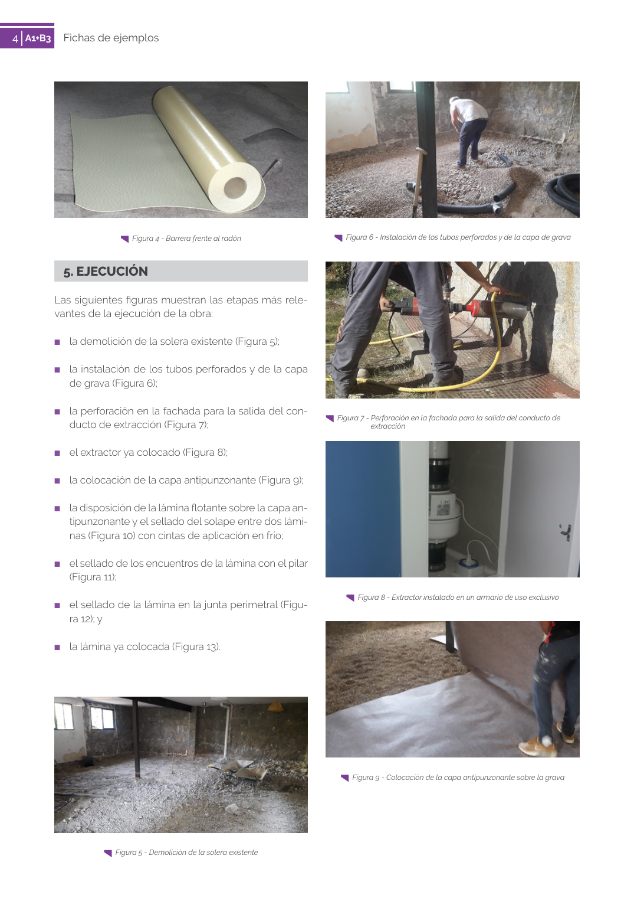

<!doctype html>
<html lang="es"><head><meta charset="utf-8">
<meta name="viewport" content="width=device-width, initial-scale=1">
<title>GUIA · Página física 4</title><link rel="stylesheet" href="../estilo.css">
</head><body>
<nav><a href="../index.html">Índice</a> › <a href="../doc/guia-pdf-75560417d686-2019-b82cfb6da594.html">GUIA</a></nav>

<h1>GUIA · Página física 4</h1>
<header class="meta"><p><strong>Ejemplo A1 B3 Barrera frente al radon despresurizacion con red de tubos</strong> · edición 2019 · capa guia</p>
<p>Documento <code>GUIA-PDF-75560417d686</code> · SHA-256 del PDF <code>b82cfb6da5942cde8faab2ee62add20f04f53a5a420ef129ee29213b841c415a</code></p>
<p>Página física 4 de 6.</p>
<p><a href="../../contenido/docs/GUIA-PDF-75560417d686/2019__b82cfb6da594/fuente.pdf#page=4">Copia fiel del PDF fuente</a> · <a href="https://www.codigotecnico.org/pdf/GuiasyOtros/GuiaRadon/Ejemplo_A1+B3_Barrera_frente_al_radon+despresurizacion_con_red_de_tubos.pdf">Fuente oficial</a></p>
<p><a href="https://www.codigotecnico.org/Guias/GuiaRadon.html">Ficha de la disposición en la fuente oficial</a></p>
<div class="cita"><p><a href="../../contenido/docs/GUIA-PDF-75560417d686/2019__b82cfb6da594/fuente.pdf#page=6">Créditos y autoría en el PDF fuente</a>. Reproducción con cita de fuente y autores.</p>
<p>Permiso literal: Se permite la reproducción total o parcial del contenido de este do­ Edición actual: septiembre 2020 cumento siempre y cuando se cite la fuente original y a sus autores.</p>
<details><summary>Leer los créditos completos y la autoría</summary><pre class="literal">66 A1+B3  Fichas de ejemplos


                                                                               Este documento ha sido elaborado por el Instituto de ciencias
                                                                 de la construcción Eduardo Torroja (IETcc) bajo la supervisión
                                                                 de la Dirección General de Agenda Urbana y Arquitectura del
                                                                                         Ministerio de Transportes, Movilidad y Agenda Urbana (MITMA).

                                                                                          El IETcc, perteneciente al Consejo Superior de Investigaciones

                                                                                SECRETARÍA                                                                                GENERAL                                                                                      DE                          Científicas                                                                                                        (CSIC),                                                                                         es el centro                                                                                         de investigación                                                                                                         en                                                                                                                                            edificación
                                                                 AGENDA URBANA                                                                                      Y VIVIENDA                                                 MINISTERIO                           GOBIERNO                                         DE                                                 TRANSPORTES,                                                          MOVILIDAD                                                                 de referencia                                                                              en España.                                                                                          La Unidad                                                                                            de Calidad en                                                                                                                                                            la                                                                                                                             Construc­                            DE ESPAÑA      Y                                        AGENDA                                              URBANA                                                                         DIRECCIÓN                                                                                GENERAL                                                                                      DE
                                                                 AGENDA URBANA Y ARQUITECTURA                 ción del IETcc asesora al MITMA en la elaboración del Código
                                                                             Técnico de la Edificación que, desde el año 2019, cuenta con la
                                                                             sección HS6 Protección frente a la exposición al radón.
                                                MINISTERIO                           GOBIERNO                                         DE                                                 CIENCIA                            DE ESPAÑA                                                   E INNOVACIÓN
                                                                               Dirección y Coordinación:
                                                                                        Ministerio de Transportes, Movilidad y Agenda Urbana
                                                                                       Isabel Marcos Anasagasti
                                                                         Raquel Lara Campos
          Esta ficha forma parte de una serie de documentos englobados                                                                       Eduardo González de Prado
         en una misma publicación, cuyo objetivo es constituir una he­                                                                                                Instituto de ciencias de la construcción Eduardo Torroja CSIC
          rramienta de ayuda para el diseño de soluciones de protección                                                                                                   Pilar Linares Alemparte
           frente al radón:
                                                                                 Autoras:
       ■  Guía de rehabilitación frente al radón
                                                                                                   Pilar Linares Alemparte
          Fichas de soluciones:                                               Sonia García Ortega

           A: De aislamiento del edificio                                                                             Diagnóstico y diseño de la solución:
       ■       Solución A1. Barrera frente al radón                          Ángel Sánchez Malo · Geomnia Natural Resources SLNE
       ■       Solución A1-1. Barrera frente al radón. Encuentros
       ■       Solución A2. Sellado de fisuras, grietas, encuentros y juntas      Ejecución material de la obra:
       ■       Solución A3. Puertas estancas                            Geomnia Natural Resources SLNE
       ■       Solución A4. Creación de sobrepresión
                                                                                           Edita:
           B: De reducción del radón antes de que penetre en los locales       Centro de Publicaciones Secretaría General Técnica
           a proteger                                                               Ministerio de Transportes, Movilidad y Agenda Urbana©

       ■       Solución B1. Ventilación del espacio de contención: cá­                                                                            Entidad colaboradora:
                          mara de aire                                                                         Consejo Superior de Investigaciones Científicas · CSIC
       ■       Solución B2. Ventilación del espacio de contención: loca­                                                                                         Ministerio de Ciencia e Innovación
                                  les no habitables
       ■       Solución B3. Despresurización del terreno                        Catálogo de publicaciones de la Administración General
                                                                                    del Estado: publicacionesoficiales.boe.es
           C: De reducción del radón tras penetrar en los locales a proteger
       ■       Solución C1. Ventilación de los locales habitables                  Centro virtual de publicaciones del Ministerio de Transpor­
                                                                                                     tes, Movilidad y Agenda Urbana: www.mitma.gob.es

          Fichas de ejemplos:
                                                                               Página web del Código Técnico de la Edificación:
       ■      Ejemplo A1+B3. Barrera frente al radón + despresurización          www.codigotecnico.org
                             con red de tubos
       ■      Ejemplo A2+B1. Sellado + ventilación de la cámara sanitaria      Maquetación y diseño gráfico:
       ■      Ejemplo A2+B3. Sellado + despresurización con red de tubos       Lapizmente. Estrategia • Diseño Gráfico
       ■      Ejemplo A2+C1. Sellado + ventilación mecánica de los loca-                                                                                Los contenidos o ideas recogidas en este documento pertenecen a
                                     les habitables                                   sus autores. Este documento está basado en el conocimiento dispo­
                                                                                                 nible en el momento de su publicación. No se aceptará por las institu­
          Publicación completa:                                                    ciones ni los autores implicados responsabilidad de ningún tipo por el
          ISBN: 978-84-498-1045-9                                             uso de estas recomendaciones. Las figuras tienen carácter ilustrativo
          NIPO: 796-20-136-5                                                   y no deben interpretarse como detalles constructivos.
            1ª edición: septiembre 2020                                                                         Se permite la reproducción total o parcial del contenido de este do­
           Edición actual: septiembre 2020                                    cumento siempre y cuando se cite la fuente original y a sus autores.</pre></details></div>
<div class="aviso"><strong>Alcance y límites</strong><ul><li>Extracción automática sin revisión técnica humana completa. Contraste tablas, fórmulas, notas y excepciones con el PDF. La edición disponible no determina la vigencia ni la aplicabilidad a un proyecto.</li><li>Guia o documento divulgativo; no es texto normativo.</li><li>Extracción automática; el cotejo humano está pendiente.</li><li>Semántica y tablas no equivalen a validación exhaustiva.</li></ul></div></header>
<nav><a href="guia-pdf-75560417d686-2019-b82cfb6da594__p0003.html">← Página 3</a> · <a href="guia-pdf-75560417d686-2019-b82cfb6da594__p0005.html">Página 5 →</a></nav>
<p>Formato: <a href="../../contenido/docs/GUIA-PDF-75560417d686/2019__b82cfb6da594/pagina/p0004.md">Texto de la página (Markdown)</a></p>
<p><a href="../../contenido/docs/GUIA-PDF-75560417d686/2019__b82cfb6da594/bloque/p0004.json">JSON de bloques</a></p>
<pre class="literal">4
Fichas de ejemplos
A1+B3
4
  Figura 4 - Barrera frente al radón
5. EJECUCIÓN
Las siguientes figuras muestran las etapas más rele­
vantes de la ejecución de la obra:
	
■
la demolición de la solera existente (Figura 5);
	
■
la instalación de los tubos perforados y de la capa 
de grava (Figura 6);
	
■
la perforación en la fachada para la salida del con­
ducto de extracción (Figura 7);
	
■
el extractor ya colocado (Figura 8);
	
■
la colocación de la capa antipunzonante (Figura 9);
	
■
la disposición de la lámina flotante sobre la capa an­
tipunzonante y el sellado del solape entre dos lámi­
nas (Figura 10) con cintas de aplicación en frío;
	
■
el sellado de los encuentros de la lámina con el pilar 
(Figura 11);
	
■
el sellado de la lámina en la junta perimetral (Figu-
ra 12); y
	
■
la lámina ya colocada (Figura 13).
  Figura 5 - Demolición de la solera existente
  Figura 6 - Instalación de los tubos perforados y de la capa de grava
  Figura 7 - Perforación en la fachada para la salida del conducto de 
extracción
  Figura 8 - Extractor instalado en un armario de uso exclusivo
  Figura 9 - Colocación de la capa antipunzonante sobre la grava
</pre>
<figure><a href="../../contenido/docs/GUIA-PDF-75560417d686/2019__b82cfb6da594/figura/p0004.png"></a><figcaption>Página visual 4, para contrastar fórmulas, tablas y figuras.</figcaption></figure>
<h2>Segmentos que incluyen esta página</h2><ul>
<li><a href="../apartado/guia-pdf-75560417d686-2019-b82cfb6da594__a0015.html">a0015 · 7   boca de expulsión</a></li>
<li><a href="../apartado/guia-pdf-75560417d686-2019-b82cfb6da594__a0016.html">a0016 · 5. EJECUCIÓN</a></li>
</ul>
<footer>Generado estáticamente desde el corpus normalizado; sin JavaScript ni servicios externos. El HTML es una vista reproducible; conserve la fuente y la edición al citar.</footer>
</body></html>
